Chapter 6 Graph Analysis
In this script, we will work with network data in R.
To this end will, we will use different packages: igraph, tidygraph, and network for representing networks in R through specific object classes.
OCN for the creation of optimal channel networks, and sfnetworks for spatial networks.
6.1 The igraph package
We will start with the igraphpackage (Csardi and Nepusz 2006).
It is a very popular implementation of networks in R, which is also available for Python and C++.
First, we create a simple graph with three nodes (n).
Thee first node is connected to the second node, the second to the third, and the third to the first.
This specified in the edges argument, which takes a vector.
Each pair of entries in the vector gives the number or name of the originating and the terminating node.
For the network I described above this works out to c(1,2,2,3,3,1).
## Warning: `graph()` was deprecated in igraph 2.1.0.
## ℹ Please use `make_graph()` instead.
## This warning is displayed once every 8 hours.
## Call `lifecycle::last_lifecycle_warnings()` to see where this warning was generated.
The base plot function returns an image where nodes are represented by orange circles with their names inscribed.
The edges are arrows, so we know that the default option of the graph() function is to create directed graphs.
Exercise
Create a directed graph
We can create a non-directed network by setting directed=FALSE.

If we have more nodes in the network than are indicated in the edge list, the additional nodes are unconnected.

We can also create complete, undirected graphs that form predefined geometries like tetrahedrons.
See the help file of make_graph for more geometries.

A further alternative is to use a literal description of the graph, where named nodes are connected via -.

We can see that - is an undirected edge.
You can use as many - as you like, which might improve legibility in some cases.
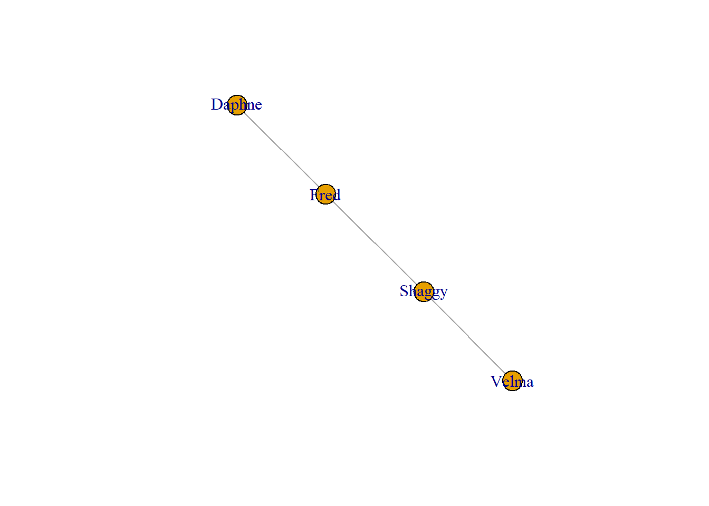
The : colon operator links vertex sets, so that all vertices from both sets are connected.
In directed graphs, you can indicate the direction with -+ where the + marks the head of the arrow.

Exercise
Create a directed graph with the graph_from_literal() function
Now lets have a look at how the graph is represented non-graphically to us:
## IGRAPH cfcb64e DN-- 5 7 --
## + attr: name (v/c)
## + edges from cfcb64e (vertex names):
## [1] Fred ->Daphne Fred ->Velma Shaggy->Fred Shaggy->Daphne Shaggy->Velma Shaggy->Scooby Scooby->ShaggyThe output always starts with IGRAPH, telling us the we have an igraph object.
Next, is a seven character string.
For me, while I write this, it is c98a3fb.
For you it will be different.
It will even be different when you read this, because the number changes every time I compile this document.
This character string is the ID of the graph.
After the ID follow four letters:
1. D or U for directed or undirected
2.
N or - for named or unnamed vertices
3.
W or - for weighted or unweighted edges
4.
B or - for bipartite and unipartite networks.D—
After the four letter code, we get the number of nodes (5) and the number of edges (7, the edge between Shaggy and Scooby is counted double). If the whole graph has a name that is printed after the the numbers. All of these properties can also be queried independently.
# number of nodes
vcount(g)
# number of edges
ecount(g)
# is the graph directed?
igraph::is.directed(g)
# is the graph bipartite
igraph::is.bipartite(g)
# is the graph weighted
is.weighted(g)
# is the graph named
is.named(g)Below that the attributes are given under +attr :.
For our graph, we get one attribute: name(v/c).
The code after the attribute name (in our case the name is name), tells us whether the attribute is of a node (v), edge (e), or whole graph (g) and whether the attribute is a character (c), numeric (n), logical (l), or other (x).
So our attribute names concerns nodes and is a character.
Lastly, the edges are listed.
We can change the attributes of nodes by accessing the nodes of the graph with V().
Then we can change and add attributes in the following way:
# name the nodes Bill, Joe, Josy, Laura, and Tyler
V(g)$name <- c("Bill", "Joe", "Josy", "Laura", "Tyler")Exercise
- Rename the nodes in your network
- What would the code for the first graph we created be? Solution
We can see the change in the summary and the plot.
## IGRAPH cfcb64e DN-- 5 7 --
## + attr: name (v/c)
## + edges from cfcb64e (vertex names):
## [1] Bill ->Joe Bill ->Josy Laura->Bill Laura->Joe Laura->Josy Laura->Tyler Tyler->Laura
We can also add a new attribute called math grade.
## IGRAPH cfcb64e DN-- 5 7 --
## + attr: name (v/c), math_grade (v/n)
## + edges from cfcb64e (vertex names):
## [1] Bill ->Joe Bill ->Josy Laura->Bill Laura->Joe Laura->Josy Laura->Tyler Tyler->Laura
Exercise
Assign values to your nodes and plot them. Color the nodes by the assigned value.
We can access the edges in the same way.
## + 7/7 edges from cfcb64e (vertex names):
## [1] Bill ->Joe Bill ->Josy Laura->Bill Laura->Joe Laura->Josy Laura->Tyler Tyler->Laura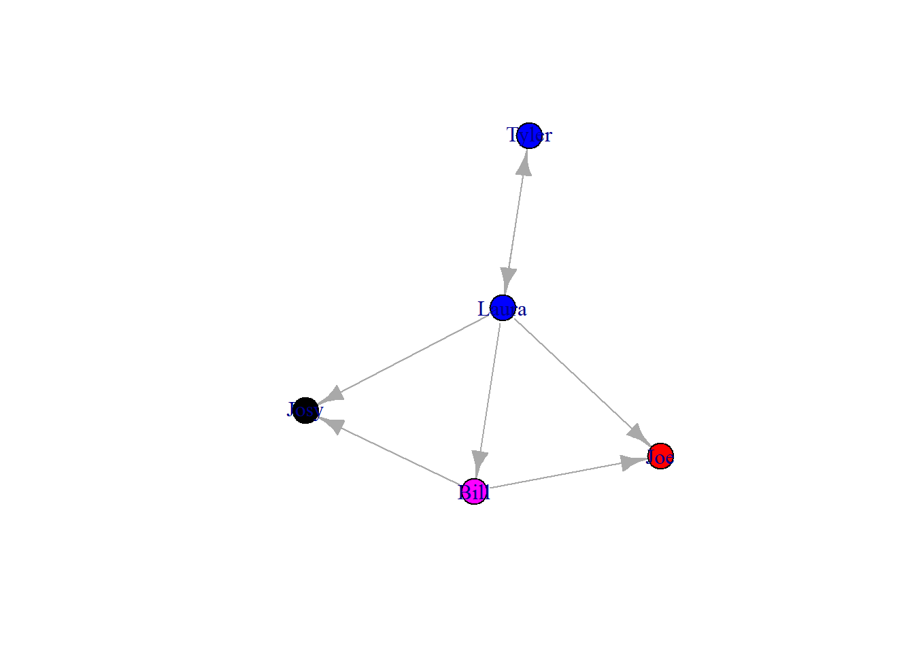
6.2 From data to graph
You often start with an adjacency matrix or an edge list which you want to turn into a graph. To illustrate how this works, I will simulate an example for each data type.
First, we create an adjacency matrix.
Remember, an adjacency matrix is a matrix filled with zeros and ones.
A one in the j\(^{th}\) column of the i\(^{th}\) row implies that the j\(^{th}\) node is connected to the i\(^{th}\) node, while a zero would imply that they are not connected.
Here, we simulate a 20x20 matrix that is randomly populated with zeros and ones.
For this, we use random draws from the binomial distribution rbinom() .
The binomial distribution is what you might use to simulate a coin toss or any other event that can lead to two different outcomes in each trial.
In this case, we draw 400 numbers (20^2), and each draw only consists of one trial and a likelihood of success (i.e. a 1) of 0.1.
adjacency <- matrix(rbinom(20^2, 1, .1), ncol = 20)
# turn all values on the diagonal to zero as a node is not connected to itself.
diag(adjacency) <- 0
ga <- graph_from_adjacency_matrix(adjacency, mode = "undirected")## Warning: The `adjmatrix` argument of `graph_from_adjacency_matrix()` must be symmetric with mode = "undirected" as of igraph 1.6.0.
## ℹ Use mode = "max" to achieve the original behavior.
## This warning is displayed once every 8 hours.
## Call `lifecycle::last_lifecycle_warnings()` to see where this warning was generated.
We can also go the other way around and turn a graph into an adjacency matrix.
## 20 x 20 sparse Matrix of class "dgCMatrix"
##
## [1,] . . 1 . . . . . 1 . . 1 1 . 1 . . . . .
## [2,] . . 1 . . 1 . . . . . . . . 1 . . . 1 .
## [3,] 1 1 . . 1 1 . . . . . . 1 . . . 1 . . .
## [4,] . . . . . 1 1 . . . . . . . . . 1 . 1 .
## [5,] . . 1 . . . 1 . . . 1 . . 1 . . . . . .
## [6,] . 1 1 1 . . . . . . 1 1 1 . . . 1 . 1 .
## [7,] . . . 1 1 . . . . . . . . 1 . 1 . . . .
## [8,] . . . . . . . . . . 1 . 1 . . 1 . . . .
## [9,] 1 . . . . . . . . . 1 . . 1 . . . . . .
## [10,] . . . . . . . . . . . 1 1 . . . . . . .
## [11,] . . . . 1 1 . 1 1 . . . . . . . . . 1 .
## [12,] 1 . . . . 1 . . . 1 . . . 1 1 . . . . .
## [13,] 1 . 1 . . 1 . 1 . 1 . . . . . . . . . .
## [14,] . . . . 1 . 1 . 1 . . 1 . . . . . 1 . .
## [15,] 1 1 . . . . . . . . . 1 . . . . . . . .
## [16,] . . . . . . 1 1 . . . . . . . . . . . .
## [17,] . . 1 1 . 1 . . . . . . . . . . . . . 1
## [18,] . . . . . . . . . . . . . 1 . . . . . .
## [19,] . 1 . 1 . 1 . . . . 1 . . . . . . . . 1
## [20,] . . . . . . . . . . . . . . . . 1 . 1 .You see that the format is unusual for matrices in R. As it says above the output, the output is a sparse matrix. A sparse matrix is a matrix where most of the entries are zeros. Instead of storing all the zeros, which would waste a lot of space, sparse matrix formats only store the non-zero values and their row and column positions. This saves memory and allows computations to skip over the zeros, making operations much faster.
Exercise
- Create an adjacency matrix with a link probability of 0.25
- Create a graph from the adjacency matrix and plot it
Next, we will create an edge list and derive a graph from it.
letters is a vector that contains all the letters of the alphabet. We take a random sample of 20 letters with sample().
The replace = TRUE argument enables us to sample the same letter multiple time.
After we have two vectors with randomly drawn letters (letters1 and letters2) we use them as columns in a matrix with the cbind() function.
This matrix is the edge list we can use to create a graph with the graph_from_edgelist() function.
letters1 <- sample(letters, 20, replace = TRUE)
letters2 <- sample(letters, 20, replace = TRUE)
el <- cbind(letters1, letters2)
el## letters1 letters2
## [1,] "w" "t"
## [2,] "w" "p"
## [3,] "b" "e"
## [4,] "m" "f"
## [5,] "k" "x"
## [6,] "o" "r"
## [7,] "f" "c"
## [8,] "q" "f"
## [9,] "p" "k"
## [10,] "b" "a"
## [11,] "c" "a"
## [12,] "n" "l"
## [13,] "s" "c"
## [14,] "m" "a"
## [15,] "l" "b"
## [16,] "x" "l"
## [17,] "z" "v"
## [18,] "v" "a"
## [19,] "f" "m"
## [20,] "m" "i"
Until now, all networks we have created have been unipartite.
There has been one set of nodes and each node could be connected to every other node.
In bipartite networks, there are two distinct sets of nodes.
Each node is only connected to nodes from the other set.
Below, I create an example of a bipartite network.
Six students (S1-S6) can register for four courses (C1-C4).
The affiliation matrix has one column per class and one row per student.
If a student is part of a class, the respective cell in the adjacency matrix holds a one.
If a student does not visit a class, it is a zero.
Both classes and students are nodes but neither students nor classes are connected among each other.
When we print the graph to the console, we can see that the graph is bipartite by looking at the four-letter code: UN-B
C1 <- c(1,1,1,0,0,0)
C2 <- c(0,1,1,1,0,0)
C3 <- c(0,0,1,1,1,0)
C4 <- c(0,0,0,0,1,1)
aff.df <- data.frame(C1,C2,C3,C4)
row.names(aff.df) <- c("S1","S2","S3","S4","S5","S6")
bn <- graph.incidence(aff.df)## Warning: `graph.incidence()` was deprecated in igraph 2.0.0.
## ℹ Please use `graph_from_biadjacency_matrix()` instead.
## This warning is displayed once every 8 hours.
## Call `lifecycle::last_lifecycle_warnings()` to see where this warning was generated.## IGRAPH d061a76 UN-B 10 11 --
## + attr: type (v/l), name (v/c)
## + edges from d061a76 (vertex names):
## [1] S1--C1 S2--C1 S2--C2 S3--C1 S3--C2 S3--C3 S4--C2 S4--C3 S5--C3 S5--C4 S6--C4plt.x <- c(rep(2, 6), rep(4, 4))
plt.y <- c(7:2, 6:3)
lay <- as.matrix(cbind(plt.x, plt.y))
shapes <- c("circle", "square")
colors <- c("blue", "red")
plot(
bn,
vertex.color = colors[V(bn)$type + 1],
vertex.shape = shapes[V(bn)$type + 1],
vertex.size = 10,
vertex.label.degree = -pi / 2,
vertex.label.dist = 1.2,
vertex.label.cex = 0.9,
layout = lay
)
6.3 Centrality measures
Next, we will turn to the centrality measures we discussed in the lecture.
The most basic measure is the degree centrality which is just the degree of a node.
We can get the degree with the function degree().
## [1] 5 4 6 4 4 8 4 3 3 2 5 5 5 5 3 2 4 1 5 2We can assign each node its degree as an attribute and plot the network with accordingly colored nodes.
For this we need two new packages: ggraph (Pedersen 2022a) and tidygraph (Pedersen 2022b).
We will look at both packages a little more in depth later in this tutorial.
##
## Attache Paket: 'tidygraph'## Das folgende Objekt ist maskiert 'package:igraph':
##
## groups## Das folgende Objekt ist maskiert 'package:raster':
##
## select## Das folgende Objekt ist maskiert 'package:stats':
##
## filter##
## Attache Paket: 'ggraph'## Das folgende Objekt ist maskiert 'package:sp':
##
## geometry## Das folgende Objekt ist maskiert 'package:spatstat.geom':
##
## square## IGRAPH d02a879 U--- 20 40 --
## + attr: degree (v/n)
## + edges from d02a879:
## [1] 1-- 3 1-- 9 1--12 1--13 1--15 2-- 3 2-- 6 2--15 2--19 3-- 5 3-- 6 3--13 3--17 4-- 6 4-- 7 4--17 4--19 5-- 7 5--11 5--14 6--11 6--12
## [23] 6--13 6--17 6--19 7--14 7--16 8--11 8--13 8--16 9--11 9--14 10--12 10--13 11--19 12--14 12--15 14--18 17--20 19--20ga2 <- as_tbl_graph(ga)
ggraph(ga2) +
geom_edge_link(lwd = 0.4) +
geom_node_point(aes(col = degree), size = 3)## Using "stress" as default layout## Warning in geom_edge_link(lwd = 0.4): Ignoring unknown parameters: `linewidth`Other centrality metrics can also be computed with the epinomous functions from the igraph package.
Another nice way to display these data is through radial plots.
However, for this we again need two additional packages: sna (Butts 2022) and network (Butts 2008) .
sna makes the plots and network provides the object class that sna uses.
In the following plots, nodes that are closer to the center have higher centrality.
A <- as_adjacency_matrix(ga, sparse=FALSE)
ga3 <- as.network.matrix(A)
gplot.target(
ga3,
degree(ga3, gmode = "graph"),
main = "Degree",
circ.lab = FALSE,
circ.col = "skyblue",
usearrows = FALSE,
edge.col = "darkgray"
)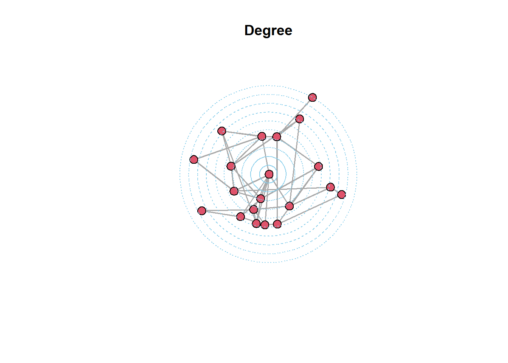
gplot.target(
ga3,
closeness(ga3, gmode = "graph"),
main = "Closeness",
circ.lab = FALSE,
circ.col = "skyblue",
usearrows = FALSE,
edge.col = "darkgray"
)gplot.target(
ga3,
betweenness(ga3, gmode = "graph"),
main = "Betweenness",
circ.lab = FALSE,
circ.col = "skyblue",
usearrows = FALSE,
edge.col = "darkgray"
)6.4 Visualization
For non-spatial networks, there is not a single correct position for any one node. They can be freely arranged in space. However, certain arrangements will make it easier to understand the network while others will simply be confusing. Visualization is as much art as science but there are some common sense rules that usually result in a less confusing figure:
Minimize edge crossings
Maximize the symmetry of the layout of nodes
Minimize the variability of the edge lengths
Maximize the angle between edges when they cross or join nodes
Minimize the total space used for the network display
These were taken from Luke (2015)
We will quickly go through some options that igraph gives you and then cover the basics of the ggraph package.
As a baseline, we start with the default plot from an igraph object.
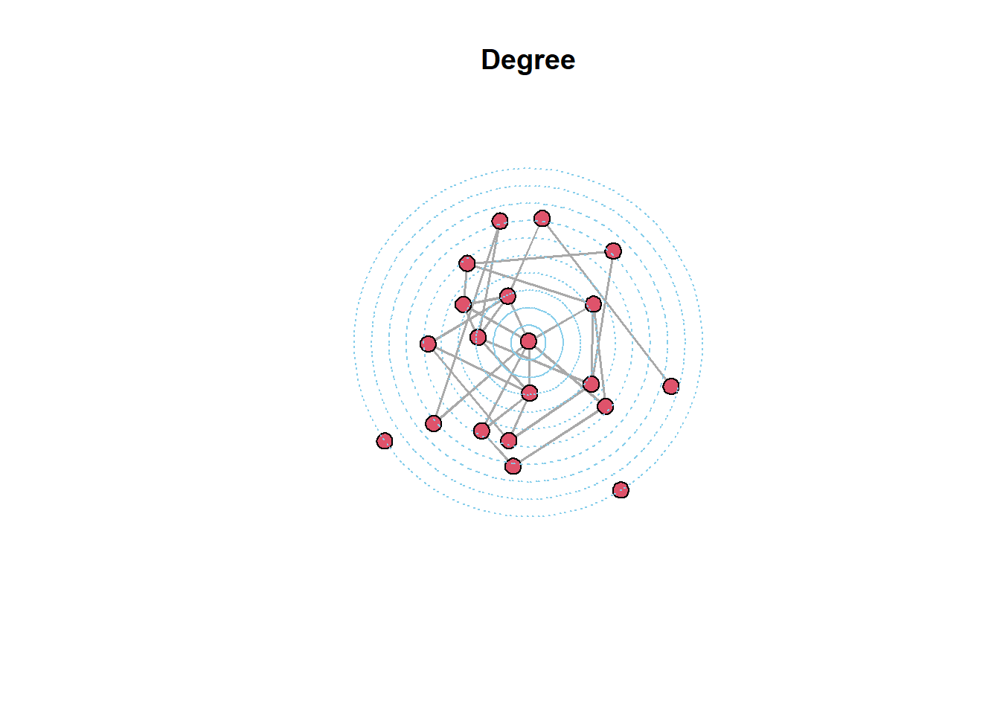
We can change the color of the nodes with vertex.color and the color of edges with edge.color.

We can add a title with

Next, we can change the graph layout, which means the rules, and the algorithm, which are used to optimize the position of the nodes.
par(mfrow = c(1,3))
plot(ga, layout=layout.circle, main = "circle")
plot(ga, layout=layout.fruchterman.reingold, main = "fruchterman")
plot(ga, layout=layout.random, main = "random")We also have the option to create an interactive 2D and 3D graph with tkplot() and rglplot().
It is not possible to embed the result in the .html file but you are currently reading. You can use the code here to try it out yourself.
With that we come to ggraph, an effort to place network visualization inside the ggplot framework. As seen above, we need a tidygraph object to use ggraph. Here, we can use the same object we used above (ga2). Each ggraph plot starts with the same function: ggraph(). The only argument in this function is the object we wish to display. As in ggplot2, this object is not a working plot yet.
## Using "stress" as default layout
All we see is a gray background. To visualize the data, we need to add geoms. First, we will add the edges. There are multiple options here and I will show some of them.
## Using "stress" as default layout
## Using "stress" as default layout## Using "stress" as default layoutNext, we have a look at the nodes.
## Using "stress" as default layout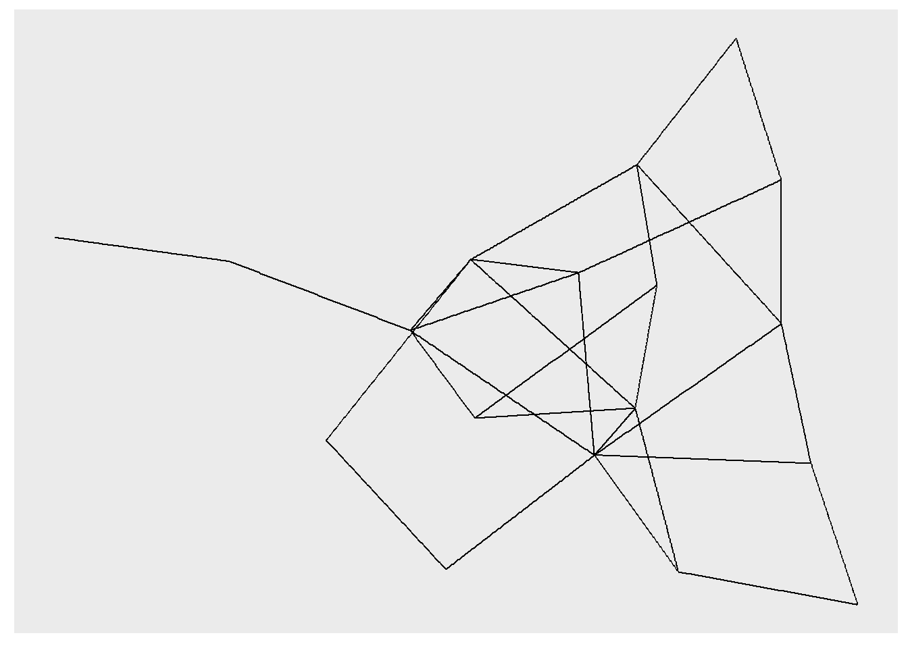
## Using "stress" as default layout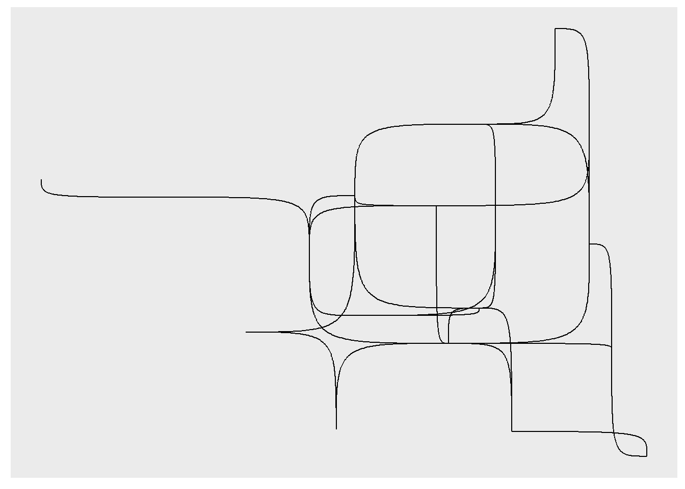
## Using "stress" as default layout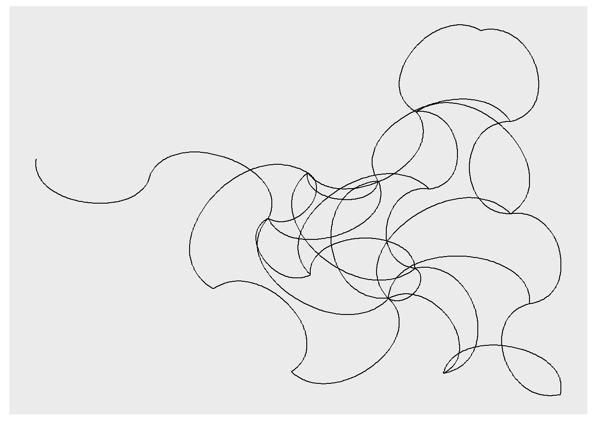
Of course, we can also show both in one plot.
## Using "stress" as default layout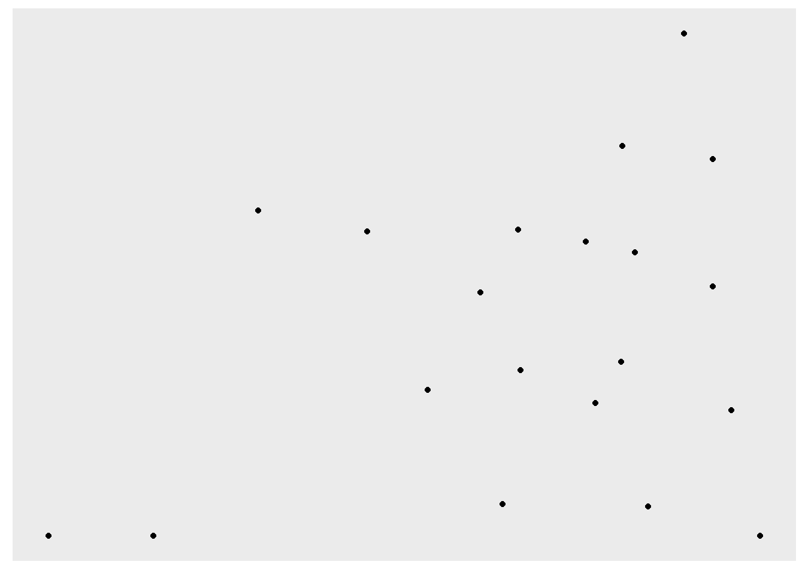
## Using "stress" as default layout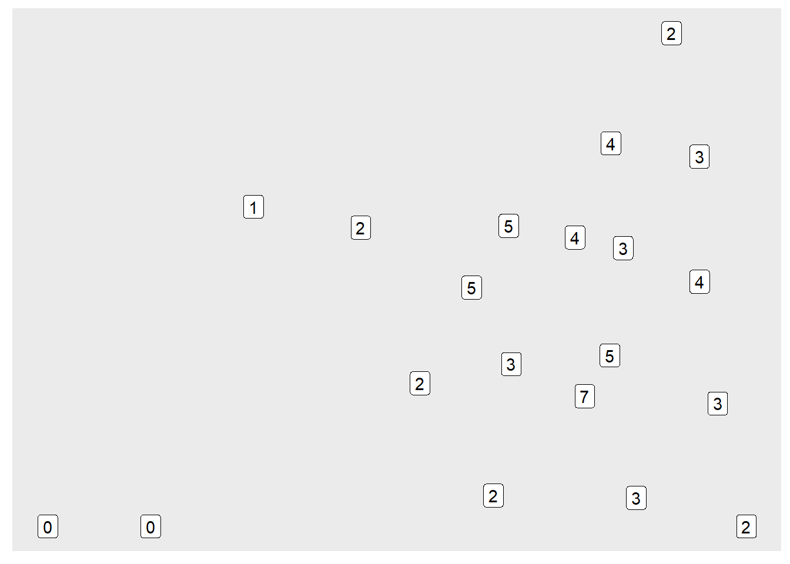
6.5 Network Models
We can simulate network models with igraph.
A Poisson random graph is simulated with erdos.renyi.game() where n is the number of nodes, m is the number of edges, p is the probability of two nodes sharing an edge, and the type is either gnm or gnp, depending on whether you supply the number of edges or the probability of adjacency.
## Warning: `erdos.renyi.game()` was deprecated in igraph 0.8.0.
## ℹ Please use `sample_gnm()` instead.
## This warning is displayed once every 8 hours.
## Call `lifecycle::last_lifecycle_warnings()` to see where this warning was generated.## Warning: `erdos.renyi.game()` was deprecated in igraph 0.8.0.
## ℹ Please use `sample_gnp()` instead.
## This warning is displayed once every 8 hours.
## Call `lifecycle::last_lifecycle_warnings()` to see where this warning was generated.Exercise
- Create a Poisson random graph model with 30 nodes and a link probability of 0.15
- Compute the betweenness centrality of the network
A small world network is created with watts.strogatz.game(), where dim is the dimension of the starting lattice, size is the size of the lattice along each dimension, nei is the neighborhood of the lattice in which nodes are connected, and p the rewiring probability.
watts.strogatz.game(dim=1,size=100,nei=2,p=0.5) |>
as_tbl_graph() |>
ggraph() +
geom_edge_link() +
geom_node_point()## Warning: `watts.strogatz.game()` was deprecated in igraph 2.0.0.
## ℹ Please use `sample_smallworld()` instead.
## This warning is displayed once every 8 hours.
## Call `lifecycle::last_lifecycle_warnings()` to see where this warning was generated.## Using "stress" as default layoutPreferential attachment models are created with barabasi.game(), where n is the number of nodes, m is the number of nodes added in each round, and zero.appeal is a factor that raises the likelihood of binding to a node that has no edges so far above zero.
## Warning: `barabasi.game()` was deprecated in igraph 2.0.0.
## ℹ Please use `sample_pa()` instead.
## This warning is displayed once every 8 hours.
## Call `lifecycle::last_lifecycle_warnings()` to see where this warning was generated.g <- as_tbl_graph(g)
ggraph(g, layout = "igraph", algorithm = "kk") +
geom_edge_link() +
geom_node_point()6.6 Optimal Channel Networks
Next, we will look at optimal channel networks and their R implementation in the OCNet Package (Carraro et al. 2020).
As always, we first load the package.
## Registered S3 methods overwritten by 'adegraphics':
## method from
## biplot.dudi ade4
## kplot.foucart ade4
## kplot.mcoa ade4
## kplot.mfa ade4
## kplot.pta ade4
## kplot.sepan ade4
## kplot.statis ade4
## scatter.coa ade4
## scatter.dudi ade4
## scatter.nipals ade4
## scatter.pco ade4
## score.acm ade4
## score.mix ade4
## score.pca ade4
## screeplot.dudi ade4## Registered S3 method overwritten by 'ape':
## method from
## plot.mst spdep## Registered S3 methods overwritten by 'adespatial':
## method from
## plot.multispati adegraphics
## print.multispati ade4
## summary.multispati ade4Creating a OCN starts with a call to create_OCN().
This function establishes a lattice with dimX points in the x direction and dimY points in the y direction.
In this grid it also establishes the flow direction of each point.
The function has many more arguments but usually we do not have to worry about them and can keep the default settings.
Here, we create an OCN in a 20x20 grid.
The function produces a list with A a vector of drainage area values (i.e., how many cells does this cell drain)
## [1] 1 1 1 1 1 1 1 1 1 1 1 1 4 1 1 1 1 1 1 1 1 5 2 1 1 4 1 1 4 1 1 9 1 2 1 1 4 1 3
## [40] 1 1 1 11 1 1 9 1 1 7 1 11 1 1 1 1 7 1 5 4 1 1 15 1 1 1 1 10 85 73 70 57 1 2 1 1 31 16 9
## [79] 1 1 17 1 1 1 1 1 99 1 2 1 1 54 48 1 38 1 5 1 3 1 19 1 3 1 1 103 1 1 1 1 1 1 1 45 1 4 1
## [118] 4 1 1 400 296 291 1 281 1 1 3 1 1 1 1 1 3 1 1 1 1 1 1 1 82 1 288 1 175 171 1 2 1 1 4 1 1 1 1
## [157] 1 1 4 1 1 79 1 1 4 1 1 166 1 1 8 1 1 1 1 1 11 7 1 1 1 75 2 1 1 1 2 1 159 147 1 1 1 4 1
## [196] 1 15 1 1 1 1 72 1 1 1 1 1 8 1 1 137 119 116 1 21 18 1 1 4 1 1 69 1 4 1 1 5 1 1 15 1 1 1 110
## [235] 1 1 1 6 1 1 1 1 66 1 1 1 1 1 1 10 1 1 1 16 70 1 7 1 1 1 1 1 58 1 6 1 1 1 7 1 1 1 15
## [274] 1 1 65 12 9 2 1 1 5 1 51 1 4 1 3 1 1 1 10 1 1 1 43 1 1 5 1 1 1 1 41 1 1 1 1 1 1 6 1
## [313] 1 1 1 40 1 1 1 1 1 1 12 1 27 1 1 1 1 1 1 2 1 1 18 1 20 1 1 1 1 9 1 2 1 21 1 9 1 1 1
## [352] 1 1 14 1 2 1 14 4 1 1 3 2 1 3 1 14 1 5 1 1 1 8 1 2 1 2 4 2 1 1 1 1 1 1 1 1 1 1 1
## [391] 1 3 1 1 1 1 1 1 1 1and W a sparse adjacency matrix.
## [1] 1 1 1 1 1 1 1 1 1 1 1 1 1 1 1 1 1 1 1 1 1 1 1 1 1 1 1 1 1 1 1 1 1 1 1 1 1 1 1 1 1 1 1 1 1 1 1 1 1 1 1 1 1 1 1 1 1 1 1 1 1 1 1 1 1 1 1 1 1 1 1 1 1 1 1 1 1 1
## [79] 1 1 1 1 1 1 1 1 1 1 1 1 1 1 1 1 1 1 1 1 1 1 1 1 1 1 1 1 1 1 1 1 1 1 1 1 1 1 1 1 1 1 1 1 1 1 1 1 1 1 1 1 1 1 1 1 1 1 1 1 1 1 1 1 1 1 1 1 1 1 1 1 1 1 1 1 1 1
## [157] 1 1 1 1 1 1 1 1 1 1 1 1 1 1 1 1 1 1 1 1 1 1 1 1 1 1 1 1 1 1 1 1 1 1 1 1 1 1 1 1 1 1 1 1 1 1 1 1 1 1 1 1 1 1 1 1 1 1 1 1 1 1 1 1 1 1 1 1 1 1 1 1 1 1 1 1 1 1
## [235] 1 1 1 1 1 1 1 1 1 1 1 1 1 1 1 1 1 1 1 1 1 1 1 1 1 1 1 1 1 1 1 1 1 1 1 1 1 1 1 1 1 1 1 1 1 1 1 1 1 1 1 1 1 1 1 1 1 1 1 1 1 1 1 1 1 1 1 1 1 1 1 1 1 1 1 1 1 1
## [313] 1 1 1 1 1 1 1 1 1 1 1 1 1 1 1 1 1 1 1 1 1 1 1 1 1 1 1 1 1 1 1 1 1 1 1 1 1 1 1 1 1 1 1 1 1 1 1 1 1 1 1 1 1 1 1 1 1 1 1 1 1 1 1 1 1 1 1 1 1 1 1 1 1 1 1 1 1 1
## [391] 1 1 1 1 1 1 1 1 1
## Class 'spam' (32-bit)The following functions all take the OCN object as their argument.
Instead of creating a new object, they attach new levels to the list.
create_OCN() created the list at the flow direction level (FD).
landscape_OCN() creates the DEM of the river network and adds the catchment level (CM) to the list.
The DEM is stored in OCN$FD$Z.

Now we need to aggregate the flow network.
We set a threshold of how many cells need to flow into one cell for this cell to become a river.
This is done with aggregate_OCN().
This function builds the network at the river network (RN), aggregated (AG), subcatchment (SC), and catchment levels.
We use the default threshold here, so the only argument we need is OCN.
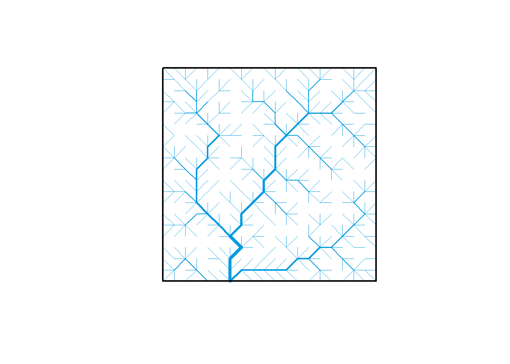
We can also take the OCN and transform it into an igraph object.
river_graph <- OCN_to_igraph(OCN, level = "AG")
river_graph |>
as_tbl_graph() |>
ggraph(layout = "igraph", algorithm = "kk") +
geom_edge_link(color = "blue") +
geom_node_point(size = 0)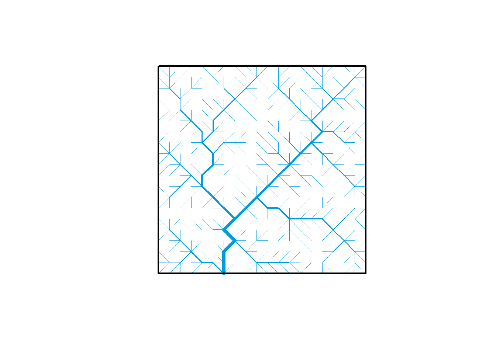
Exercise
- Simulate a 15x20 optimal channel network
- Turn the OCN into an igraph object
- Compute the degree centrality of the nodes
6.7 sfnetworks
Lastly, we will turn towards the sfnetworks package (van der Meer et al. 2024).
This R package enables us to turn spatial sf objects into networks.
sfnetworks uses the tidygraph package instead of igraph.
However, tidygraph is intimately linked to igraph.
It takes most of the functions from igraph and changes them so they adhere to the tidy principles.
There is an implementation of spatial networks in R which works directly with igraph, spNetworks(Gelb 2021) but we will not cover this package here.
Since tidygraph adheres to the tidy principles, we can use dplyr verbs and piping.
So, before we work with sfnetworks, let’s have a look at tidygraph.
To represent networks while following tidy principles (i.e., one row = one observation), tidygraph uses two tables for each graph.
One table represents the nodes and the other table represents the edges.
As an example, we will use the OCN we just created.
## # A tbl_graph: 381 nodes and 380 edges
## #
## # A rooted tree
## #
## # Node Data: 381 × 0 (active)
## #
## # Edge Data: 380 × 2
## from to
## <int> <int>
## 1 14 13
## 2 15 13
## 3 1 22
## # ℹ 377 more rowsriver_tidy has the class tbl_graph.
We also see the number of nodes and edges and two tibbles: Node Data without columns, because the nodes do not have attributes yet and Edge Data which is an edge list.
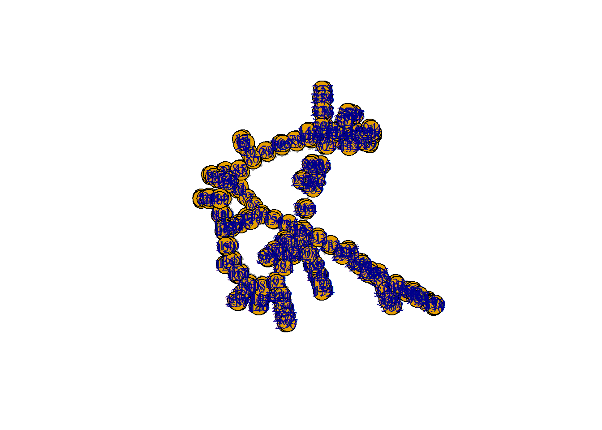
Plotting returns the same default output as for an igraph object and a look at class of river_tidy reveals that it has inherited the igraph class from river_graph.
## [1] "tbl_graph" "igraph"If we want to work with either one of the tables, we use the activate() function.
In the following example, I add an attribute, letter, to the nodes.
river_tidy %>%
activate(nodes) %>%
mutate(letter = sample(x = letters, size = vcount(river_graph), replace = TRUE))## # A tbl_graph: 381 nodes and 380 edges
## #
## # A rooted tree
## #
## # Node Data: 381 × 1 (active)
## letter
## <chr>
## 1 e
## 2 c
## 3 r
## 4 l
## 5 b
## 6 f
## 7 u
## 8 i
## 9 b
## 10 h
## # ℹ 371 more rows
## #
## # Edge Data: 380 × 2
## from to
## <int> <int>
## 1 14 13
## 2 15 13
## 3 1 22
## # ℹ 377 more rowsWe can activate the edges in the same way and we can activate edges and nodes in a single pipe.
river_tidy %<>%
activate(nodes) %>%
mutate(degree = centrality_degree()) %>%
activate(edges) %>%
mutate(centrality = centrality_edge_betweenness()) %>%
arrange(centrality)This will be enough tidygraph for now.
The package has almost 300 functions, so we will not be able to cover the package extensively.
Another short introduction by the package’s author is available here.
Now we turn back to sfnetworks.
To demonstrate the functionality, we use a demo data set that is included in the Package.
The roxel data contain the road network (including bike lanes and footpaths) of the Roxel neighborhood in the German city of Münster.
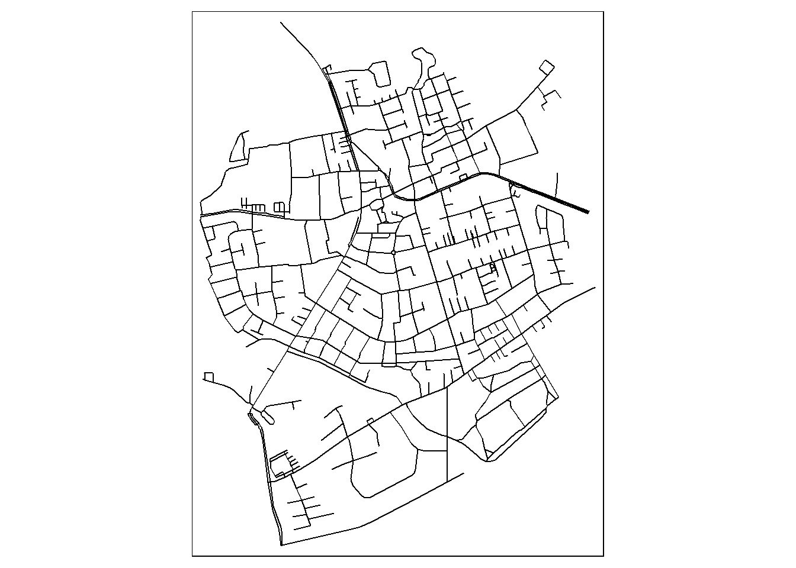
There are three options of creating a network from sf data with sfnetwork.
1. You provide a point data set as nodes and a line data set as edges
2. You provide a line data set and the nodes are automatically created at the ends of the lines.
3. You provide a point data set the the edges are drawn as straight lines between the nodes.
We will try out the just linestrings and just points versions here.
We will start with the just linestrings option.
The object looks similar to the tidygraph object we saw before.
New are the coordinate reference system and the coordinates of the nodes and edges.
## # A sfnetwork with 701 nodes and 851 edges
## #
## # CRS: EPSG:4326
## #
## # An undirected multigraph with 14 components with spatially explicit edges
## #
## # A tibble: 701 × 1
## geometry
## <POINT [°]>
## 1 (7.533722 51.95556)
## 2 (7.533461 51.95576)
## 3 (7.532442 51.95422)
## 4 (7.53209 51.95328)
## 5 (7.532709 51.95209)
## 6 (7.532869 51.95257)
## # ℹ 695 more rows
## #
## # A tibble: 851 × 5
## from to name type geometry
## <int> <int> <chr> <fct> <LINESTRING [°]>
## 1 1 2 Havixbecker Strasse residential (7.533722 51.95556, 7.533461 51.95576)
## 2 3 4 Pienersallee secondary (7.532442 51.95422, 7.53236 51.95377, 7.53209 51.95328)
## 3 5 6 Schulte-Bernd-Strasse residential (7.532709 51.95209, 7.532823 51.95239, 7.532869 51.95257)
## # ℹ 848 more rows
Now we can extract our new nodes as sf point object.
roxel_point <- st_as_sf(activate(roxel_nw1, nodes), crs = 4326)
roxel_nw2 <- roxel_point |> as_sfnetwork()
plot(roxel_nw2)
Working with the spatial network works the same as the non-spatial tidygraph networks.
roxel_nw1 %>%
activate("edges") %>%
mutate(weight = edge_length()) %>%
activate("nodes") %>%
mutate(bc = centrality_betweenness(weights = weight, directed = FALSE))## # A sfnetwork with 701 nodes and 851 edges
## #
## # CRS: EPSG:4326
## #
## # An undirected multigraph with 14 components with spatially explicit edges
## #
## # A tibble: 701 × 2
## geometry bc
## <POINT [°]> <dbl>
## 1 (7.533722 51.95556) 13808
## 2 (7.533461 51.95576) 9777
## 3 (7.532442 51.95422) 35240
## 4 (7.53209 51.95328) 31745
## 5 (7.532709 51.95209) 7174
## 6 (7.532869 51.95257) 9081
## # ℹ 695 more rows
## #
## # A tibble: 851 × 6
## from to name type geometry weight
## <int> <int> <chr> <fct> <LINESTRING [°]> [m]
## 1 1 2 Havixbecker Strasse residential (7.533722 51.95556, 7.533461 51.95576) 28.8
## 2 3 4 Pienersallee secondary (7.532442 51.95422, 7.53236 51.95377, 7.53209 51.95328) 108.
## 3 5 6 Schulte-Bernd-Strasse residential (7.532709 51.95209, 7.532823 51.95239, 7.532869 51.95257) 54.3
## # ℹ 848 more rowsWe can also use spatial operations like spatial filtering on the network.
bbox <- st_bbox(roxel)
bbox |>
st_as_sfc() |>
st_as_sf(crs=4326) |>
st_transform(3035) ->
bbox
bbox <- st_buffer(x = bbox, dist = -700, joinStyle = "MITRE", mitreLimit = 2)
bbox %<>% st_transform(4326)
plot(roxel_nw1, col = "grey")
plot(bbox, border = "red", lty = 4, lwd = 4, add = TRUE)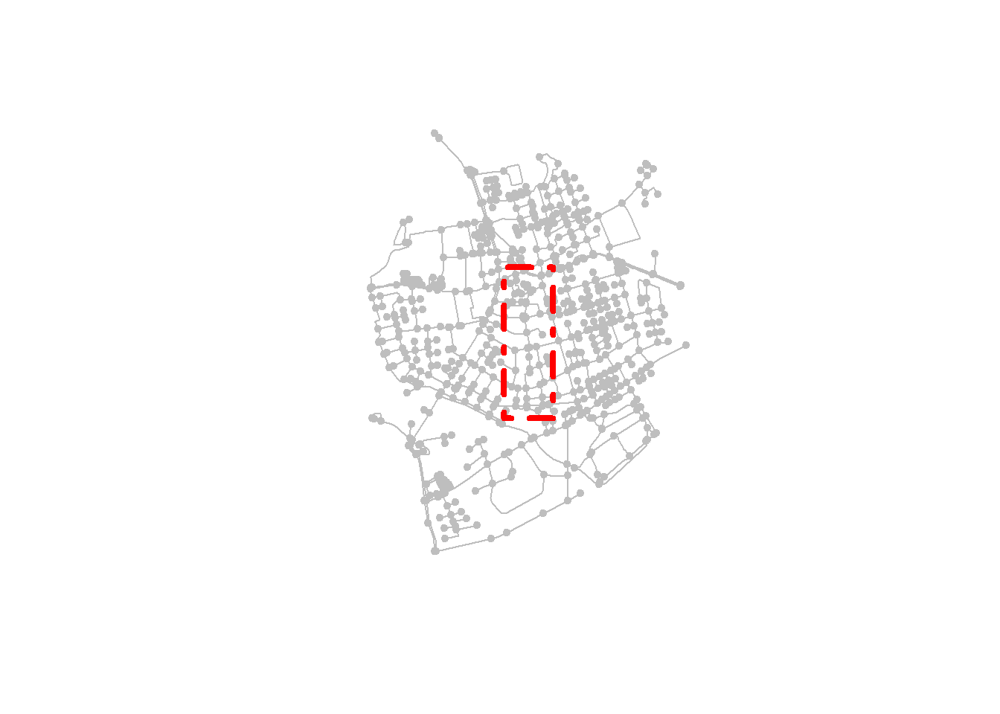
filtered = roxel_nw1 %>%
activate("edges") %>%
st_filter(bbox) %>%
activate("nodes") %>%
st_filter(bbox)
plot(roxel_nw1, col = "grey")
plot(filtered, add = TRUE)
We can also filter to observations around a specified point.
point = st_centroid(st_combine(roxel_nw1))
filtered = roxel_nw1 %>%
activate("nodes") %>%
st_filter(point, .predicate = st_is_within_distance, dist = 500)
plot(roxel_nw1, col = "grey")
plot(filtered, add = TRUE)
plot(point, col = "red", add = TRUE)6.7.1 Finding paths in the network
Within our network we can find the shortest way to get from point A to point B with the function st_network_paths().
The function uses the most common routing algorithm (i.e., algorithm to find the shortest path): the Dijkstra algorithm.
Before we call it, we prepare the data:
- We transform it into a projected coordinate system. Now the unit of edge lengths are meters and not fractions of degrees.
- Add the edge length as an attribute to the edges. In a spatial context, the length of edges has a natural interpretation as the spatial distance between points.
net <-
roxel_nw1 %>%
# transform so that distances are in meters
st_transform(3035) %>%
activate("edges") %>%
dplyr::mutate(weight = edge_length())We compute the shortest paths from the 38\(^{th}\) to the 200\(^{th}\) and the 517\(^{th}\) node.
The length of the paths is weighted by the weight variable which we computed in the code block above.
Now what is the output of this function?
## # A tibble: 2 × 2
## node_paths edge_paths
## <list> <list>
## 1 <int [25]> <int [24]>
## 2 <int [22]> <int [21]>A tibble with two list columns, two rows long. Each row is one path, i.e., the first row is the path from 38 to 200 and the second row is the path from 38 to 517. In the first column we get the node ids on the respective path and in the second column we get the edge ids. To visualize this we will write a small function that plots each node in the node paths (i.e., column 1).
plot_path = function(node_path) {
net %>%
activate("nodes") %>%
slice(node_path) %>%
plot(cex = 1.5, lwd = 1.5, add = TRUE)
}Now we apply this function to all paths and also add symbols to the start and ending points of our paths.
colors = sf.colors(3, categorical = TRUE)
plot(net, col = "grey")
paths %>%
pull(node_paths) %>%
walk(plot_path)
net %>%
activate("nodes") %>%
st_as_sf() %>%
slice(c(38, 200, 517)) %>%
plot(col = colors, pch = 8, cex = 2, lwd = 2, add = TRUE)
If you need an overview of the distances between all nodes use st_network_cost().